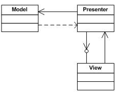

Model View Presenter clean implementation
Introduction
This is a simple MVP in an ASP.NET application. It separates visual display logic from data procurement logic. in MVP Model-View-Presenter, View has the task of displaying data. Presenter is concerned about getting the relevant data for view. Model is a repository in MVP.
Building the Sample
Visual Studio 2010 required to open solution file available with the code sample. You can alternatively add projects in sample code to an earlier version of Visual Studio solution to make it run in case you don't have VS2010. It is built using 3.5 .NET framework. Framework 2.0 will also work if you change the sample code accordingly.
Description
Goal of using MVP pattern is to separate the responsibilities of application so that application code is :-
• Code is testable using test frameworks
• Application is more maintainable
• Application is more extensible
Using MVP you can seperate View from Presenter. The responsibility of View is to display data while Presenter has to prepare data for the View. View will raise requests to serve data and Presenter honors those request.
Presenter and View know each other only through the contract which is implemented by View. View requests are served based on the contract it has implemented. A Presenter can serve multiple Views.
Presenter's talks to the model (Database) through Business API to pull required data as per the requested contract. The Presenter functionality can be tested by mocking up views that raises request and is served by Presenter.
View: A view is any form or window that represents UI of the application.
Presenter: The presenter is an entity that presents the data to the view that is to be shown to the user.
Model: The model is the actual data that the Presenter will request and gets displayed in the View. The Model is responsible for obtaining the data.

The attached sample code contains four projects:-
1. Service
2. Presenter
3. EModel
4. Views
The Service project provides a dummy implementation of back end. It represents how the backend will provide data to the front end. In MVP it is paying role of Model. Service provides an API GetPersons for a given criteria. This returns a collection of Person type.
The EModel project represents Enterprise model classes. These are light weight objects to be used between the app server and the web server communication. The service serves EModel class and not the business classes which is not shown in the sample.
The business or domain object will have lot more attributes along with behavior while EModel class Person is just a container object and a DTO on service tier would populate it To and From business object.
Presenter listens to View. It provides initial data required by the view. When view raises a request it is handled by presenter which talks to the service and provides the requested data.

I hope you find it as easy and understandable implementation.